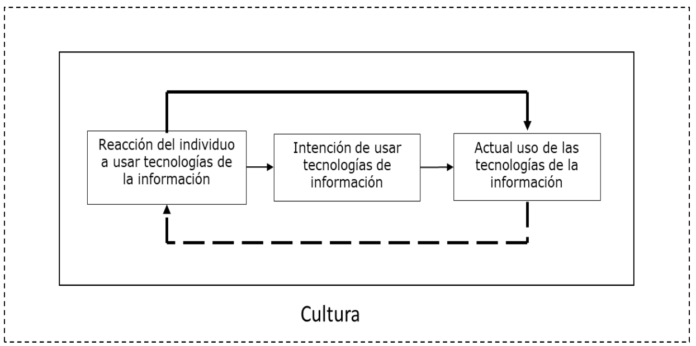
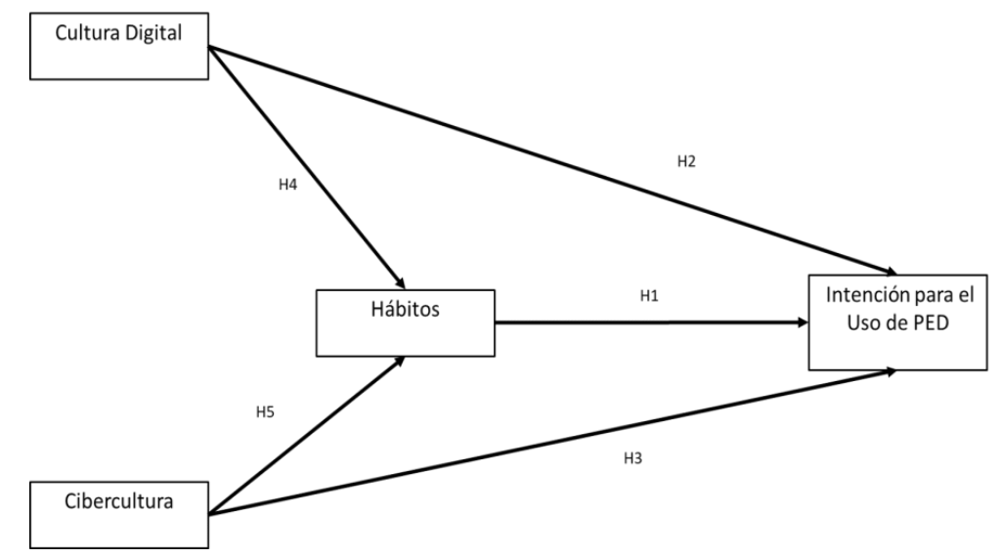
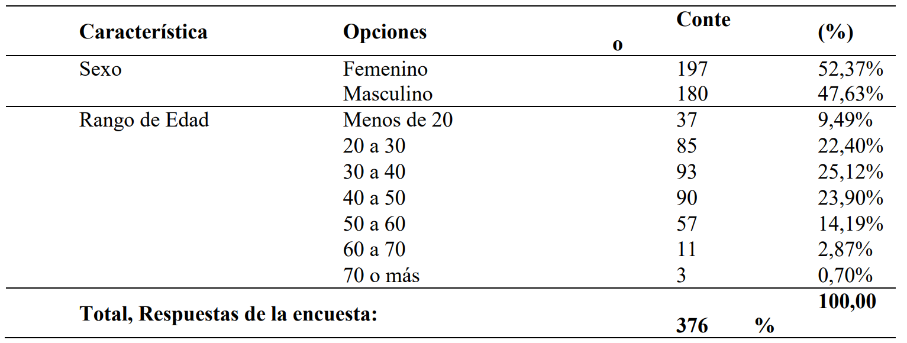
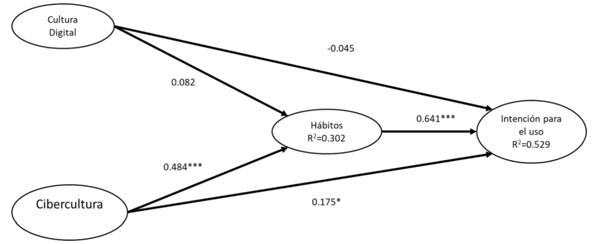
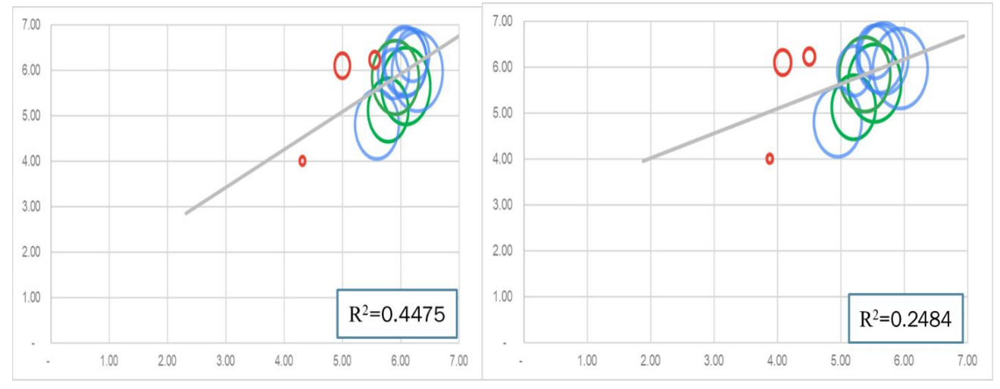
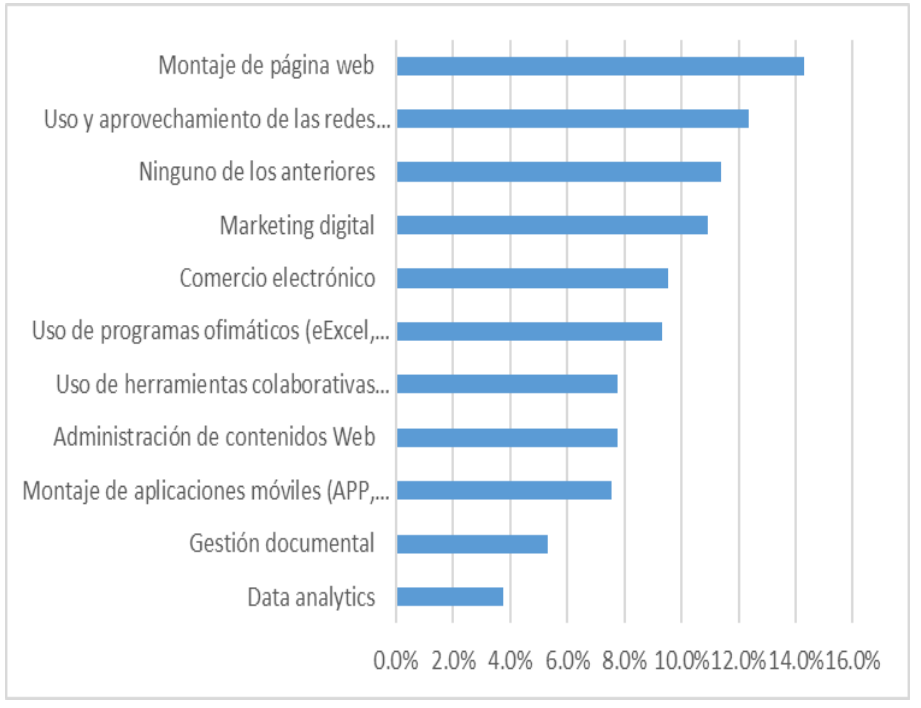

Introducción
En los primeros días de junio en la Corporación Unificada Nacional de Educación Superior,
CUN, se realizó una encuesta nacional de uso de tecnologías y la cultura digital en las Instituciones
de Educación Superior (IES). Las IES en una era de grandes datos en donde los estudiantes están
comprometidos con el acceso a recursos en línea utilizando sus dispositivos móviles, computadoras portátiles
y otros dispositivos digitales, deben comprender como en el proceso de aprendizajeenseñanza es dinamizado
para mejorar los resultados de aprendizaje de los estudiantes en un
entorno rico en tecnología (Huda, et al., 2018; Santiago, Díez, & Andía, 2017). Asociado con este
creciente interés por parte algunos autores en comprender este fenómeno, diferentes estudios han
abordado aspectos tales como la relación entre creencias, la ansiedad con adopción de tecnologías
(Yanurato, Maat, Husnin, & Atweh, 2019).
La anterior tendencia académica se vio acelerada cuando Covid-19 afectó desde el mes abril
de 2020 a cerca del 97% de los países del mundo (Giannini, 2020). Como uno de los ejes verticales
de la sociedad, las universidades han hecho contribuciones significativas a la gestión de riesgos de
emergencia, enfrentando al mismo tiempo los problemas de las dificultades económicas de los
alumnos, la infección de maestros y estudiantes, la aplicación insatisfactoria de la tecnología de la
información para resolver la crisis. Relacionado con este último aspecto, existe ambigüedad y
desacuerdo sobre qué enseñar, cómo enseñar, la carga de trabajo de profesores y estudiantes, el
entorno de enseñanza y las implicaciones para la equidad educativa (Zhang, Wang, Yang, & Wang,
2020). Sumado a los anterior, los problemas de la infraestructura de enseñanza en línea, la
inexperiencia de los maestros, la brecha de información, el entorno complejo en el hogar (Wang,
Cheng, Yue, & McAleer, 2020; Salas, et al., 2020), hace que autores como Toquero (2020), quien
recomienden que las instituciones educativas deben producir estudios para proliferar y documentar
el impacto de la pandemia en el sistema educativo, adicionalmente existe una mayor necesidad de
que las instituciones educativas fortalezcan las prácticas en el plan de estudios y lo hagan más
receptivo a las necesidades de aprendizaje de los estudiantes, incluso más allá de las aulas
convencionales (Toquero, 2020).
Si bien la pandemia por COVID-19 no fue el detonante para la actual tendencia de la
educación, el desarrollo de avances hacia la implementación de la tecnología para atraer la atención
de los estudiantes, las primeras iniciativas iban encaminadas a mejorar los ambientes virtuales de
aprendizaje (AVA). Estudios como el realizado por Rashid, Shukor, Tasir, & Na (2021) quienes
han mostrado acercamientos semejantes de investigación centrado en analizar las percepciones y
la tendencia de los profesores a utilizar el AVA. Para el caso particular de este estudio los autores
analizaron las percepciones de los profesores a partir del uso del Modelo de Aceptación de
Tecnología, TAM. Dentro de los hallazgos se encontró que los profesores estaban moderadamente preparados
para usar AVA y aceptaron moderadamente la implementación del mismo. Además de
eso, los profesores consideraron que el AVA era útil y fácil de usar, así como que la aceptación de
los profesores era influenciada por la disposición de los profesores y las percepciones de los
profesores sobre la utilidad y la facilidad de utilizar de las AVA en la enseñanza. Pese a que al
igual que el estudio anterior, muchos otros evidencian una positiva intención de utilizar AVA en
su enseñanza por parte de los profesores por que puede mejorar la forma innovadora de enseñar,
mejorando el interés de los estudiantes en la construcción de conocimientos, la sobre exposición
que en la actualidad se vive cambio muchos lo prometedor de estos resultados y motiva a buscar
un mejor entendimiento del actual contexto. Es por todo lo ya mencionado que dentro de los
objetivos de este estudio se busca determinar cómo los elementos culturales han influenciado en el
uso y la aceptación de tecnologías digitales en las IES del país, luego del impacto causado por el
COVID- 19 (World Health Organization, 2020).
El uso de TAM en el ambiente de la educación ha sido ampliamente uso (Scherera, Siddiqb,
& Tondeurc, 2019; Vanduhe, Na, & Hasan, 2020), pese a ello, en el caso particular de este estudio,
se hizo uso de las variables del Modelo Unificado de Aceptación y Uso de Tecnologías,
UTAUT (Venkatesh, Morris, Davis, & Davis, 2003; Venkatesh, Thong, & Xu, 2012), como marco
de referencia para el diseño e implementación del instrumento usado (ver anexo 2), por ser este
último más amplio y contener las variables del modelo TAM. La adaptación usada del instrumento
UTAUT se hizo con base en el trabajo hecho en Colombia por Dakduk, Santalla-Banderali, & van
der Woude (2018) para analizar Blended Learning.
El rol de diferentes aspectos asociados a la cultura ha sido abordado para dar entendimiento
a como los individuos se adaptan al uso de tecnologías y, por tanto, dispersan la información y el
conocimiento al interior de una organización. Desde la dimensión del individuo, la cultura permea
el mecanismo (i) reacción del individuo a usar tecnologías, (ii) intención de usar tecnologías y (iii)
uso de las tecnologías de información, tal como se ilustra en la Figura 1. El estudio de dimensiones
como la cultura organizacional ha mostrado que (1) la aceptación de un sistema de gestión de
conocimiento KMS es influenciada por los canales de comunicación que la cultura organizacional
promueve (Ciganek, Mao, & Srite, 2008), (2) la implementación de procesos Lean, igualmente se
ven afectados por el tipo de cultura que la organización tiene (Pakdil & Leonar, 2015) y (3) como
la implementación de un CRM (Rahimi & Gunlu, 2016), entre otros muchos ejemplos es igualmente influenciada
por la cultura. Por lo anterior, este trabajo aborda igualmente
acercamientos desde el enfoque del individuo, pero, en esta oportunidad asociadas a variables a un
escala más regional o nacional, como puede serlo la cibercultura y la cultura digital.
Se entenderá como cibercultura, todos aquellos hábitos y costumbres que se encuentran
asociados a una vida caracterizada por el sentido de colectividad (Ayala-Perez & Joo-Nagata,
2019). Por otro lado, entenderemos como cultura digital una extensión al concepto de cibercultura
en la cual se involucra una colección de conocimientos y usos de las tecnologías digitales; por
tanto, debe entenderse como una visión más restrictiva de la cibercultura en la cual se requieren
tanto conocimiento como competencias digitales (Ayala-Perez & Joo-Nagata, 2019).
Figura 1.Esquema conceptual sobre la naturaleza de la cultura en la reacción de individuo al uso
de
sistemas tecnológicos.

Fuente: Elaboración Propia
Sumando a todo lo descrito anteriormente, involucrar variables culturales para describir la
intención en adoptar nuevas tecnologías, ha despertado principal interés en la última década.
Resaltada Salehan, Kim & Lee (2018) el impacto que ha tenido las tecnologías de la información
y comunicación en la forma en la que los individuos viven y, como la cultura puede ser observada
como un facilitador que empuja a los individuos a definir ciertos tipos de valores.
Este trabajo presenta una descripción estructural de los hallazgos inmediatos de este trabajo
en el contexto del ambiente de Educación Superior colombiana, sobre cuatros variables estudiadas: (i)
Cibercultura (CB), (ii) Hábitos para usar Recursos Digitales (HR), (iii) Cultura Digital (CD), y
(iv) Intención del uso de Recursos Digitales para la Edad Digital (IR). Cada variable se midió con
ítems en escala tipo Likert de 1 a 7 (1: Total Desacuerdo y 7: Total Acuerdo).
Metodología
El COVID-19 condujo a una emergencia sanitaria en todo el país a comienzos del 2020,
que poco después a finales marzo conllevó a un decretó de aislamiento preventivo obligatorio en
toda Colombia (Ministerio de Salud y Protección Social, 2020). Como resultado de este
aislamiento, el sistema educativo se vio obligado a atender un incidente en el que se declaró que
los cursos presenciales serían descontinuados hasta nuevo aviso, y el sistema educativo migró en
un tiempo récord hacia la modalidad de acceso remoto para continuar impartiendo las clases. Con
el ánimo de analizar este fenómeno esta investigación, utilizando un instrumento derivado de la
Teoría Unificada de Uso y Aceptación de Tecnologías, conocida como UTAUT (Venkatesh,
Morris, Davis, & Davis, 2003; Venkatesh, Thong, & Xu, 2012) y haciendo uso de una contexto
local en el que dicha teoría fue previamente validada para analizar el Blended Learning en
Colombia (Dakduk, Santalla-Banderali, & van der Woude, 2018), se hizo una adaptación para
captar información relacionada con la percepción de las Tecnologías Digitales en Educación
Superior y su relación.
Figura 2.Modelo conceptual trabajado para este artículo. En este modelo las dos dimensiones
culturales se establecen como antecedentes en la relación hábitos vs intensión.

Fuente: Elaboración propia
Para procesar los datos se utilizó el modelo estructural ilustrado en la Figura 2 y se validó
haciendo uso de PLS-SEM. Se establecen cinco hipótesis, la primera de ellas establece es
resultado de la aplicación del modelo UTAUT (Venkatesh, Thong, & Xu, 2012), en el cual se
establece que
H1: Los hábitos de los individuos en el uso de tecnologías (recursos digitales) afecta la
intensión en el uso de las mimas.
La cultura se refiere a los valores y creencias compartidos de los individuos dentro de una
unidad, así como, como también la totalidad de patrones de conducta, artes, creencias,
instituciones y todos los demás productos del trabajo y el pensamiento humanos que se
transmiten socialmente, característicos de una comunidad o población (Straub, Loch, Evaristo,
Karahanna, & Srite, 2002). El impacto de la cultura como una variable mediadora en la adopción
y uso de tecnologías ha sido explorado (Yavwa & Twinomurinzi, 2018), demostrando que la
cultura efectivamente impacta IR, resultados semejantes son avalados por (Gir, Putra, &
Widarmanti, 2021). Pese a lo anterior, otros autores analizan la cultura como una variable que
afecta la adopción de tecnología (Srite & Karahanna, 2006). La diferencia principal, en la
mayoría de los casos, entre los diferentes enfoques se encuentra en cómo constructo de cultura es
analizado. En aquellos casos donde la unidad de análisis para estudiar la cultura son los grupos,
entonces, la cultura se manifiesta como una variable moderadora, como en nuestro caso la unidad
de análisis para hablar tanto de cultura digital, como de cibercultura es el individuo, entonces se
propone las siguientes proposiciones:
H4: La cultura digital afecta la intención uso de tecnologías (recursos digitales).
H5: La cibercultura afecta la intención de uso de tecnologías (recursos digitales).
Como se mencionó antes, se define la cibercultura como todos aquellos hábitos y
costumbres que se encuentran asociados a una vida caracterizada por el sentido de colectividad
(Ayala-Perez & Joo-Nagata, 2019). Adicionalmente, se mencionó que el concepto de cultura
digital se puede ver como una extensión del concepto de cibercultura, por lo tanto, resulta
comprensible que la cultura tenga una relación tanto con los hábitos como con las intenciones.
H4: La cultura digital afecta los hábitos de los individuos en el uso de tecnologías
(recursos digitales).
H5: La cibercultura afecta los hábitos de los individuos en el uso de tecnologías (recursos
digitales).
Para analizar el modelo expuesto en la figura 2 la información fue procesada utilizando
software licenciado Microsoft® Office® Excel® e ADANCO®.
Discusión y Resultados
La Tabla 1 ilustra una descripción en términos de sexo y edad para la muestra de individuos
asociados a una Institución de Educación Superior IES, los cuales hicieron parte de este estudio.
Tabla 1.Descripción de la muestra de este estudio, información demográfica de la muestra.

Tal como se mencionó en la metodología, para el análisis del modelo ilustrado en la Figura
1, se hizo uso de PLS-SEM. Como resultado del uso de esta metodología, los resultados
encontrados arrojaron que para el caso de las IES la cultura digital no tiene ninguna relación
significativa, ni con los hábitos, ni con la intención en el uso de recursos digitales.
Figura 3.Resultado de la validación del modelo estructural mediante PLS-SEM.

Nota: Se destaca el bajo nivel de significancia para las relaciones con cultura digital. *pvalue <
0.1, **p-value < 0.05, ***p-value <0.01.
Para analizar estadísticamente las relaciones (1) cibercultura con hábitos, (2) hábitos con
intención de uso y (3) cibercultura con intención de uso se hizo uso de la metodología de
bootstrapping (ver anexo 1). Mediante este método no paramétrico, se encontró que los hábitos
trabajan como una variable mediadora entre la cibercultura y la intención de uso de recursos
digitales y que dicha relación es significativa con un nivel de significancia por debajo del 0.01%.
Como consecuencia de este hallazgo se dispuso a ilustrar un comparativo entre la relación
cibercultura con intención de uso, junto con la relación cultura digital vs intención de uso (ver
Figura 4). El resultado expuesto es de carácter ilustrativo, ya que en ningún momento se realizó
una línea de tendencia usando una regresión lineal ponderada; sin embargo, permite evidenciar de
mejor manera cómo la línea de tendencia en efecto es más pronunciada para el caso de cibercultura,
permitiéndose así observar como el fenómeno es plausible y evidenciable de forma visual.
Figura 4.
Relación lineal identificada mediante modelo PL-SEM entre intención de uso y cultura.

Nota: A la izquierda se encuentra un comparativo entre cibercultura con intención de uso
de tecnologías. A la derecha se hace el mismo comparativo para el caso de la cultura digital. En
ambos casos se definen grupos de edades por colores, siendo los rojos la población más joven y la
verde la población mayor a 60 años. Elaboración propia utilizando el software Microsoft® Office®
Excel®
Conclusiones
En la sección anterior los resultados expuestos buscaron abordar dos grandes preguntas. La
primera de ellas relacionada con la existencia algún efecto de la cultura digital tanto en hábitos
como en la intensión de uso de herramientas tecnologías pedagógicas justo después de la
cuarentena declarada por el gobierno nacional; y como segundo la existencia de algún efecto de la
cibercultura igualmente en hábitos como en intensión de uso. La respuesta a la primera pregunta
es no, no hay evidencia estadística suficiente, en esta muestra, que permita inferir diferencias entre
los valores esperados de cada variable; es decir que, si bien los individuos tienen conocimiento de
las tecnologías digitales, su conocimiento y hábitos frente a las mismas no impactan en la decisión
de usarlas. Lo anterior, este trabajo lo ha dominado como mente digital, en vista que evidencia que
la personas no hacen uso de sus conocimientos para tomar las decisiones de uso y estas están en
una gran medida asociadas con su sentido de colectividad, es decir, las tecnologías son vista más
como un medio de comunicación, más que como una herramienta.
El efecto que, evidenciado por parte de la cibercultura en las decisiones de los individuos
en querer adoptar un recurso digital, lleva a la inferir que, por lo menos, en el ámbito de las IES no hay
evidencia suficiente para creer que existe una cultura digital dispuesta a afrontar los retos que
la llamada nueva normalidad nos impone. A pesar que la naturaleza del instrumento usado es
percepción, comparando los resultados anteriores con los resultados que la gran encuesta de TICS,
implementada por el Ministerio de Tecnologías de la Información y Comunicación de Colombia
(ver Figura 5), hay fuertes indicios que invitan a explorar estos primeros resultados, todo lo anterior
como consecuencia que las industrias evidencia que sus principales retos a 2017 para las empresas
estaban direccionadas hacia canales de comunicación, siendo esto último un enfoque más propio
de una cibercultura que de una cultura digital.
Figura 5.
Necesidades de Capacitación para las empresas según gran encuesta de TICS MINTIC

Nota: Elaboración propia, fuente de datos Gran Encuesta TICS MINTIC.
Referencias
- De Miguel, V., & Prieto, J. (2016). El acoso laboral como factor determinante en la
productividad
empresarial: El caso español. Perspectivas, 38(1), 25-44.
- Domínguez, J., Padilla, I., Domínguez, J., Martínez, M., Ortega, G., García, M., & Moreno, A.
(2012). Acoso laboral en trabajadores de atención a la salud de Ceuta. MEDICINA Y
SEGURIDAD DEL TRABAJO, 58(227), 117-127.
- Fuentes, R. (2008). Mobbing: Manifestaciones corporales al vivir un proceso de acoso laboral.
Revista Neurología, Neurocirugía y Psiquiatría, 41(1), 13-20.
- Giraldo, J. (2005). Perspectiva del acoso laboral en el contexto colombiano. Diversitas:
Perspectivas en Psicología, 1(2), 205-216.
- Gómez, C., Sánchez, V., Fajardo, M. (2018) Los proyectos y sus dimensiones: una aproximación
conceptual. Contexto 7, 57-64. DOI: https://doi.org/10.18634/ctxj.7v.0i.885
- González, D. & Delgado, S. (2008). Acoso laboral y trastornos de la personalidad: un estudio con
el MCMI-II. Clínica y Salud, 19(2), 191-204.
- González, D. (2007). El acoso psicológico en el lugar de trabajo: una aproximación desde la
psicología forense. Psicopatología Clínica Legal y Forense, 7, 41-62
- Guglielmi, D., Panari, C., & Depolo, M. (2009). Qualità della vita lavorativa e rischio di
mobbing:
l’effetto moderatore del clima sociale. Avances En PsicologÍa Latinoamericana, 27(1), 9-
20
- Hirigoyen, M. (2001). El acoso moral. Barcelona: Paidós.
- Holis, L. (2015). Take the Bull by the Horns: Structural approach to minimize workplace
bullying
for women in American higher education. Oxford Roundtable, 1(1), 1-5
- Justicia, F., Benítez, J., Fernández, E., & Berbén, A. (2007). El fenómeno del acoso laboral
entre
los trabajadores de la universidad. Psicologia en Estudo, 12(3), 457-463.
https://doi.org/10.1590/s1413-73722007000300002
- Kort, F. (1995). Interacción mente-cuerpo. Revista Latinoamericana de Psicología, 27(3),497-501
- Letelier, G., Navarrete, E., & Farfà, C. (2014). Síndromes organizacionales: mobbing y burnout.
Revista Iberoamericana de Ciencias, 1(1), 29-40.
- López, M., Vázquez, P. & Montes, C. (2010). Mobbing: Antecedentes psicosociales y
consecuencias sobre la satisfacción laboral. Revista Latinoamericana de Psicología, 42(2),
215-224
- Meseguer, M., Soler, M., & García, M. (2014). El papel moderador de la autoeficacia profesional
entre situaciones de acoso laboral y la salud en una muestra multiocupacional. Anales de
Psicología, 30(2), 573-578. https://doi.org/10.6018/analesps.30.2.161251
- Nilson, M., Glasø, L., & Einarsen, S. (2017). Exposure to workplace harassment and the Five
Factor Model of personality: A meta-analysis. Personality and Individual Differences, 104,
195-206. https://doi.org/10.1016/j.paid.2016.08.015
- Ochoa, C., & Layedra, W. (2019). Labor harassment from a doctrinal and legal perspective.
Revista
Científica Electrónica de Ciencias Gerenciales, 42(14), 5-13.
- Orozco, E. (2014). Efectos en el desempeño por acoso laboral desde la perspectiva de un grupo
de
trabajadores de género masculino de diferentes puestos y organizaciones. (Tesis de
Pregrado). Universidad Rafael Landívar, Guatemala (Guatemala).
- Pardo, V. (2016). El acoso laboral en el ámbito del trabajo. Aspectos Constitucionales el
“Mobbing” en el derecho argentino y la Constitución Nacional. Tesis de Pregrado.
Universidad Empresarial Siglo 21. Córdoba (Argentina).
- Peralta, M. (2004). El acoso laboral - Mobbing- perspectiva psicológica. Revista de Estudios
Sociales, 18(1), 111-122.
- Peralta, M. (2006). Perspectiva del acoso laboral en el contexto colombiano. Psicología desde
el
Caribe, 17(1), 1-26
- Rosario, E. & Rovira, L. (2011). Consecuencias psicológicas del mobbing: estudio empírico de
las
consecuencias psicológicas del mobbing en una muestra de empleados en Puerto Rico.
Revista Interamericana de Psicología Ocupacional, 30(2), 183-199
- Trujillo, M., Valderrabano, M., & Hernández, R. (2007). Mobbing: historia, causas, efectos y
propuesta de un modelo para las organizaciones mexicanas. INNOVAR, 17(29), 71-91.
- Ugarte, J. (2012). El acoso laboral: entre el Derecho y la Psicología. Revista de derecho
(Valparaíso), 39, 221-231. https://doi.org/10.4067/s0718-68512012000200008
- Vilariño, M., Amado, B., Martin-Peña, J., & Vázquez, M. (2020). La simulación del acoso laboral
en el LIPT-60: Implicaciones para la evaluación psicológica forense. Anuario de Psicología
Jurídica, 30(1), 83-91. https://doi.org/10.5093/apj2019a19

 Magíster en Ciencias Físicas, Físico
e Ingeniero Industrial, Corporación Unificada Nacional de Educación Superior – CUN,
nicolas_afanador@cun.edu.co.
Magíster en Ciencias Físicas, Físico
e Ingeniero Industrial, Corporación Unificada Nacional de Educación Superior – CUN,
nicolas_afanador@cun.edu.co.